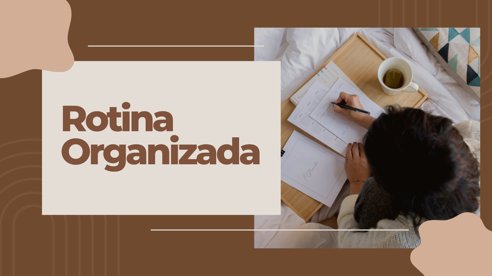

Planeje seu dia
Transforme rotinas em experiências agradáveis!
Bem-vindo(a), aqui é onde sua rotina ganha vida! Imagine um espaço criado especialmente para transformar a forma como você organiza e vivencia seus dias. Aqui, cada ferramenta é projetada para não apenas acompanhar suas tarefas e compromissos, mas para inspirar uma nova forma de alcançar seus objetivos com facilidade e prazer.
Explore nossas soluções personalizáveis e descubra como um pouco de planejamento pode abrir portas para uma vida mais produtiva e gratificante.
Mas afinal, o que é necessário para ser produtivo e disciplinado? O que preciso fazer para mudar meus hábitos maus para bons?
Criamos uma lista de coisas na qual você pode fazer para começar a adquirir novos hábitos se acostumar com a rotina.
-
Faça uma lista de Tarefas.
-
Defina Prioridades.
-
Defina horários para terminar as tarefas
- Tenha um Planejamento da semana e do mês traçando Metas e Objetivos.
- Tenha um tempo reservado para atividades físicas.
- E o mais importante: Defina um tempo para descansar. (É de extrema importância que você durma e descanse bem, para poder lidar com suas tarefas diárias).